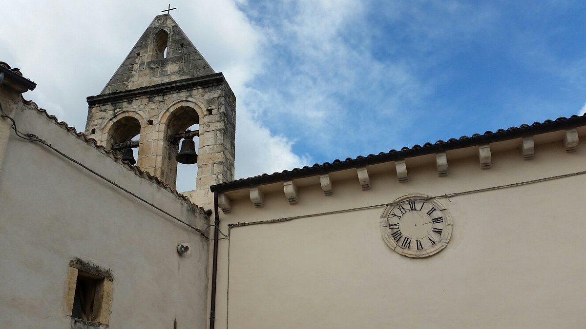

Bolognano – centro storico
Chiesa di Santa Maria Entroterra
- Dove
- Piazza Cesare Battisti, all'ingresso del borgo vecchio di Bolognano.
Storia e dettagli

- Quando
- Esisteva già nel X secolo. Sul cornicione della facciata è incisa la data 1588. Il tetto a capriate lignee è del 1938.
- Storia
- Fa parte dei beni donati all'abbazia di Casauria; secondo la tradizione fu fortificata dai monaci nell'884. Fino al Seicento dipese dall'abate di Casauria, poi dalla diocesi di Chieti. È annessa al Palazzo Durini: un passaggio al primo piano permetteva ai baroni di seguire le funzioni da un loggione riservato. Nel 1883 una parte dei locali fu acquistata dal Comune e adibita a scuola elementare.
- Da vedere
- Portale in pietra locale con frontone romanico, attribuito alla scuola di San Liberatore alla Maiella (XIII secolo); interno a due navate; pala d'altare del 1590 con la Madonna col Bambino tra Santa Lucia e Santa Caterina d'Alessandria; campanile a vela.